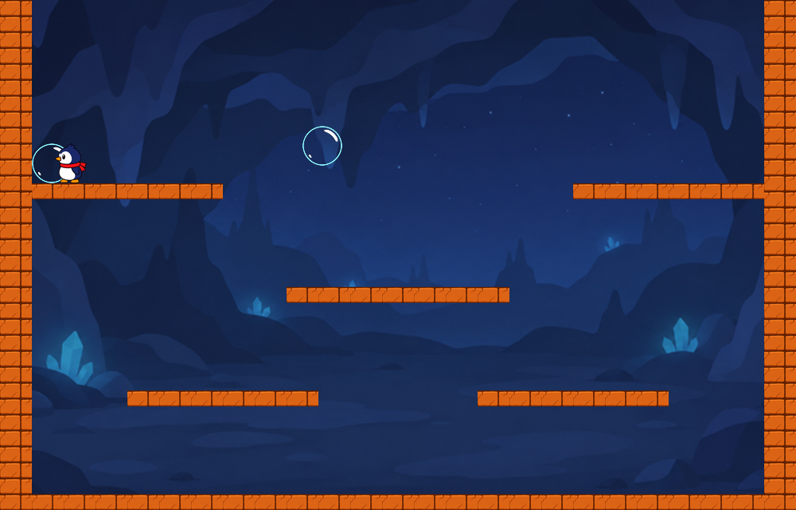
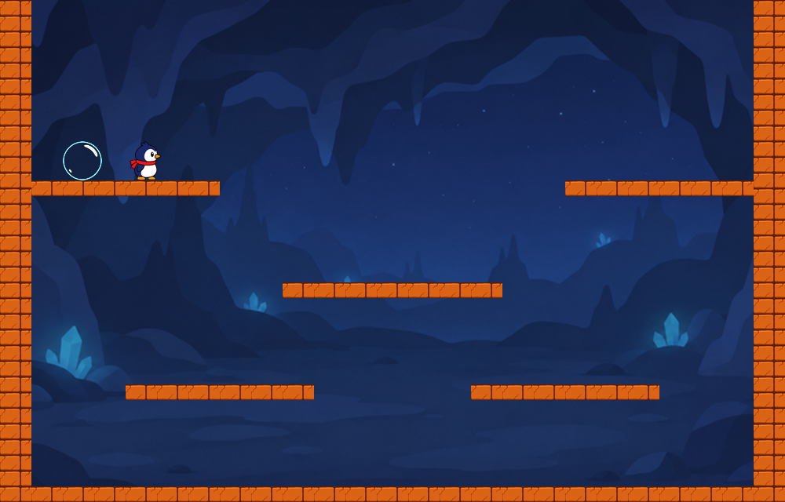
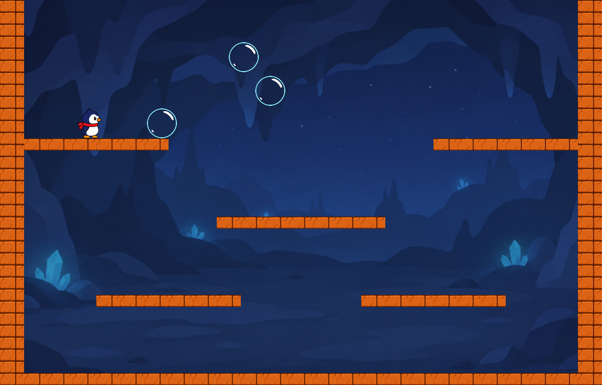

8장. 물방울 쏘기
7장에서는 펭귄이 위 화살표 키로 점프하게 했습니다. 이번 장에서는 스페이스를 눌러 물방울을 쏩니다. 먼저 물방울을 화면에 놓습니다. 그런 다음 여러 물방울을 목록에 모아 게임 루프에서 움직입니다.
장을 마치면 왼쪽으로 쏜 물방울은 벽을 넘지 않고 벽 앞에 머뭅니다. 오른쪽으로 쏜 물방울은 옆으로 날아간 뒤 위로 떠오릅니다.

8-1 스페이스로 물방울 만들기
물방울이 움직이려면 먼저 화면에 나타나야 합니다. 이번 절에서는 펭귄의 위치에 물방울을 만들고 창에 추가합니다. 아직 이동 코드를 넣지 않으므로 물방울은 만들어진 자리에 그대로 있습니다.
물방울 클래스와 스페이스 키 연결하기
src/bubble/game/Player.java와 src/bubble/game/BubbleFrame.java를 수정합니다. 같은 폴더에 Bubble.java를 새로 만듭니다.
Player에는 바라보는 방향을 읽을 수 있도록 @Getter를 붙입니다. Bubble은 플레이어의 위치와 방향을 받아 물방울을 준비합니다. BubbleFrame에서는 스페이스 키를 누르면 물방울을 만드는 메서드가 호출되도록 연결합니다.
수정 파일: src/bubble/game/Player.java
새 파일: src/bubble/game/Bubble.java
수정 파일: src/bubble/game/BubbleFrame.java
import javax.swing.ImageIcon;import javax.swing.JLabel;import lombok.Getter;import lombok.Setter;public class Player extends JLabel {⋯ private boolean left; @Setter private boolean right; @Getter private Direction direction; private ImageIcon playerR; private ImageIcon playerL;package bubble.game;import javax.swing.ImageIcon;import javax.swing.JLabel;public class Bubble extends JLabel { private int x; private int y; private Direction direction; public Bubble(Player player) { x = player.getX(); y = player.getY(); direction = player.getDirection(); setIcon(new ImageIcon("image/bubble.png")); setSize(50, 50); setLocation(x, y); }} case KeyEvent.VK_LEFT -> player.setLeft(true); case KeyEvent.VK_RIGHT -> player.setRight(true); case KeyEvent.VK_UP -> player.jump(); case KeyEvent.VK_SPACE -> shoot(); } }⋯ setVisible(true); } private void shoot() { Bubble bubble = new Bubble(player); add(bubble); } private void addBrick(int x, int y) { JLabel brick = new JLabel(brickIcon); brick.setBounds(x, y, 40, 20);만들어질 때의 위치와 방향 기억하기
Player의 direction 필드에 @Getter를 붙이면 Lombok이 getDirection()을 만듭니다. 물방울은 이 메서드로 펭귄이 바라보는 방향을 읽습니다.
Bubble도 Player처럼 JLabel을 상속합니다. 물방울 그림을 담고 창 안에서 위치를 정하기 위해서입니다. 생성자의 Player player는 물방울의 출발 위치와 방향을 알려 주는 플레이어입니다.
생성자에서 호출하는 player.getX()와 player.getY()는 화면에 놓인 플레이어의 좌표를 돌려줍니다. 두 메서드는 JLabel이 물려받은 메서드이므로 Player에 따로 만들지 않습니다.
물방울은 좌표를 자기 필드인 x, y에 저장합니다. 방향도 player.getDirection()으로 읽어 자기 direction에 저장합니다. 생성할 때 값을 복사하므로 이미 만든 물방울의 출발 위치와 방향은 바뀌지 않습니다. 나중에 펭귄이 이동하거나 반대쪽을 보더라도 마찬가지입니다.
setIcon()은 미리 제공한 image/bubble.png를 물방울 그림으로 지정합니다. setSize(50, 50)으로 크기를 정하고, setLocation(x, y)으로 플레이어와 같은 좌표에 놓습니다. 생성자를 마친 물방울은 창에 추가할 준비가 된 상태입니다.
키를 누르면 창에 추가하기
BubbleFrame의 키 입력 코드에 KeyEvent.VK_SPACE를 추가했습니다. 스페이스 키를 누르면 shoot()가 호출됩니다.
shoot()는 new Bubble(player)로 물방울을 준비하고 add(bubble)로 창에 붙입니다. 앞 장의 플레이어와 같은 방식입니다.
이번 절에서는 물방울을 움직이는 메서드를 호출하지 않습니다. 기존 게임 루프가 펭귄만 움직이므로 물방울은 생성된 좌표에 남습니다.
펭귄을 비켜 물방울 확인하기
실행 결과
BubbleFrame을 Run As → Java Application으로 실행합니다. 스페이스를 짧게 한 번 누른 뒤, 오른쪽 화살표 키로 펭귄을 비켜 놓습니다.
스페이스를 눌렀던 자리에 물방울이 남아 있어야 합니다. 생성 직후에는 펭귄과 물방울의 좌표가 같아 그림이 겹칠 수 있습니다. 펭귄을 옮기면 물방울이 따로 보입니다.

8-2 물방울 목록을 루프에서 움직이기
스페이스를 누를 때마다 물방울이 늘어납니다. 몇 개가 만들어질지 정해져 있지 않으므로 목록에 모아 두고 게임 루프에서 하나씩 움직입니다.
이번 절에서는 물방울이 발사 방향으로 날아가다가 위로 떠오르게 합니다. 기존 Timer 하나가 펭귄과 모든 물방울을 함께 움직이도록 고칩니다.
목록과 이동 메서드 추가하기
Bubble에 이동 속도, 옆으로 날아갈 거리, 지금까지 이동한 거리를 추가합니다. move()에서는 이동 거리에 따라 가로 이동과 상승 중 하나를 선택합니다.
BubbleFrame에는 물방울 목록을 추가합니다. 기존 Timer 안에 있던 플레이어 이동 코드를 tick()으로 옮깁니다. tick()에서 물방울 목록도 순회합니다.
수정 파일: src/bubble/game/Bubble.java
수정 파일: src/bubble/game/BubbleFrame.java
public class Bubble extends JLabel { private static final int SPEED = 6; private static final int RANGE = 300; private int x; private int y; private Direction direction; private int distance; public Bubble(Player player) { x = player.getX();⋯ setSize(50, 50); setLocation(x, y); } public void move() { if (distance < RANGE) { if (direction == Direction.LEFT) { x -= SPEED; } else { x += SPEED; } distance += SPEED; } else if (y > 20) { y -= 2; } if (x < 40) { x = 40; } if (x > 910) { x = 910; } setLocation(x, y); }} private Player player; private ImageIcon brickIcon = new ImageIcon("image/brick.png"); private List<Rectangle> floors = new ArrayList<>(); private List<Bubble> bubbles = new ArrayList<>(); public BubbleFrame() { setTitle("버블 게임");⋯ } }); new Timer(16, e -> { player.move(); player.fall(floors); }).start(); new Timer(16, e -> tick()).start(); pack(); setResizable(false);⋯ setVisible(true); } private void tick() { player.move(); player.fall(floors); for (Bubble bubble : bubbles) { bubble.move(); } } private void shoot() { Bubble bubble = new Bubble(player); bubbles.add(bubble); add(bubble); }화면에 붙이고 목록에 기록하기
bubbles는 발사한 물방울을 보관하는 List<Bubble>입니다. 수정한 shoot()는 새 물방울을 만든 뒤 bubbles.add(bubble)과 add(bubble)을 차례로 호출합니다.
두 호출은 맡은 일이 다릅니다. bubbles.add(bubble)은 게임 루프가 물방울을 찾도록 목록에 기록합니다. add(bubble)은 물방울을 창에 붙여 화면에 보이게 합니다. 같은 물방울 객체를 목록과 창에서 함께 사용하는 것입니다.
목록에만 넣으면 화면에 나타나지 않습니다. 반대로 창에만 추가하면 목록을 순회하는 이동 코드가 그 물방울을 찾지 못합니다. 물방울을 보여 주면서 계속 움직이려면 두 곳에 모두 추가해야 합니다.
Timer의 반복 작업을 tick()으로 모으기
앞 절까지 Timer는 람다 안에서 player.move()와 player.fall(floors)만 호출했습니다. 물방울 이동도 반복해야 하므로 두 호출을 새 메서드인 tick()으로 옮겼습니다.
기존 Timer 코드는 new Timer(16, e -> tick()).start()로 바뀝니다. 같은 타이머가 반복해서 실행할 내용을 tick()에 모은 것입니다. 16은 밀리초 단위의 호출 간격입니다. 실제 호출 시점은 실행 상황에 따라 달라질 수 있습니다.
tick()에서는 먼저 플레이어의 이동과 낙하를 계산합니다. 이어서 for (Bubble bubble : bubbles)로 목록의 물방울을 하나씩 꺼내 bubble.move()를 호출합니다. 물방울이 하나면 하나를, 세 개면 세 개를 같은 게임 루프에서 움직입니다.
스페이스 키를 누르면 shoot()가 물방울을 만들어 목록에 넣습니다. 이후에는 Timer가 tick()을 반복 호출하면서 목록에 있는 물방울을 계속 움직입니다. 그래서 키를 누르고 있지 않아도 발사된 물방울은 움직입니다.
정해진 거리까지 옆으로 날아가기
SPEED는 한 번 갱신할 때 가로로 이동할 거리인 6입니다. RANGE는 옆으로 날아가는 구간의 기준 거리인 300입니다. distance는 각 물방울의 이동 거리를 기록하는 필드이며, 처음 값은 0입니다.
move()는 먼저 distance < RANGE를 확인합니다. 아직 기준 거리에 도달하지 않았다면 생성할 때 저장한 방향으로 이동합니다. 왼쪽이면 x에서 6을 빼고, 오른쪽이면 6을 더합니다. 이어서 distance에도 6을 더합니다.
물방울마다 distance가 따로 있으므로 서로 다른 시점에 상승을 시작합니다. 먼저 쏜 물방울이 떠오르는 동안, 나중에 쏜 물방울은 아직 옆으로 날아갈 수 있습니다.
가로 이동이 끝나면 위로 떠오르기
distance가 300에 도달하면 다음 호출부터 가로 이동 조건이 거짓이 됩니다. 이때 y > 20이면 y에서 2를 뺍니다. Swing 좌표는 위쪽으로 갈수록 y가 작아지므로 물방울이 위로 올라갑니다.
가로 이동과 상승을 if와 else if로 연결했기 때문에 한 번의 move()에서는 둘 중 한 동작만 합니다. 옆으로 날아가는 구간을 마친 다음 위로 떠오르는 순서입니다.
계산한 좌표는 메서드 마지막의 setLocation(x, y)으로 화면에 반영합니다. 필드의 숫자만 바꾸면 화면 속 JLabel의 위치는 그대로이므로 이 호출이 필요합니다.
양쪽 벽 안으로 좌표 제한하기
물방울도 펭귄처럼 벽을 넘어가지 않아야 합니다. 이동을 계산한 뒤 x가 40보다 작으면 40으로, 910보다 크면 910으로 맞춥니다. 물방울의 가로 좌표를 벽 안쪽 범위로 제한하는 코드입니다.
벽에 닿아 좌표가 제한되어도 distance에는 계속 6이 더해집니다. 그래서 벽 앞에 일찍 도착한 물방울은 잠시 그 자리에 머뭅니다. 이후 distance가 300에 도달하면 위로 떠오릅니다. 벽에 막힌 뒤에도 값이 늘어나므로 distance는 실제 이동 거리와 다를 수 있습니다.
여러 물방울의 이동 확인하기
실행 결과
게임을 다시 실행합니다. 펭귄을 오른쪽으로 조금 옮긴 뒤, 시간 간격을 두고 스페이스를 세 번 누릅니다. 발사 간격을 두면 물방울이 서로 다른 높이로 떠오르는 모습을 확인하기 좋습니다.
물방울 세 개는 오른쪽으로 날아간 뒤 위로 떠오릅니다. 먼저 쏜 물방울이 더 높은 곳에 있고, 나중에 쏜 물방울이 그 아래에 보입니다.

이어서 펭귄을 왼쪽 벽 가까이 옮기고 왼쪽을 보게 합니다. 스페이스를 누르면 물방울이 왼쪽으로 이동하다가 벽 앞에서 멈춥니다. 벽 너머로 나가지 않는지 확인합니다. 잠시 뒤에는 그 물방울도 위로 떠오릅니다.
이번 장에서는 물방울을 지우지 않으므로 위쪽까지 올라간 물방울도 창과 목록에 남습니다. 시간이 지난 물방울을 없애는 기능은 다음 장에서 추가합니다.
8장 완성 코드 보관하기
확인이 끝나면 src/bubble/game의 이번 장 완성 코드를 ex08에 복사해 보관합니다. 다음 장은 src/bubble/game의 코드에서 이어서 작성합니다.